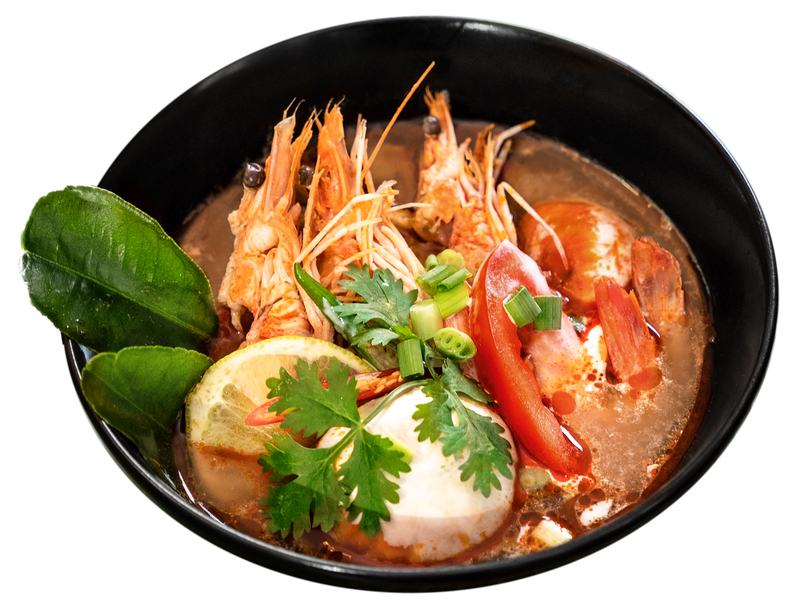
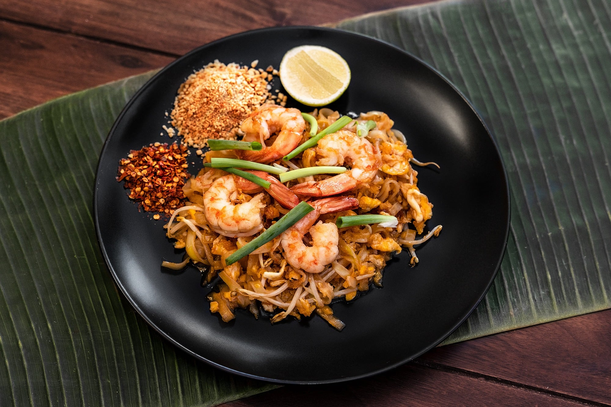
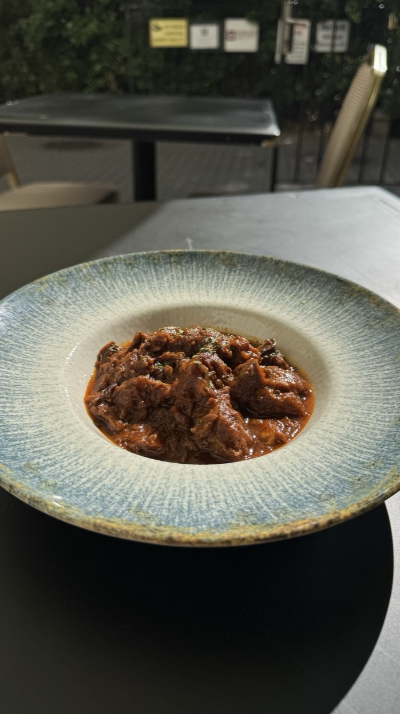
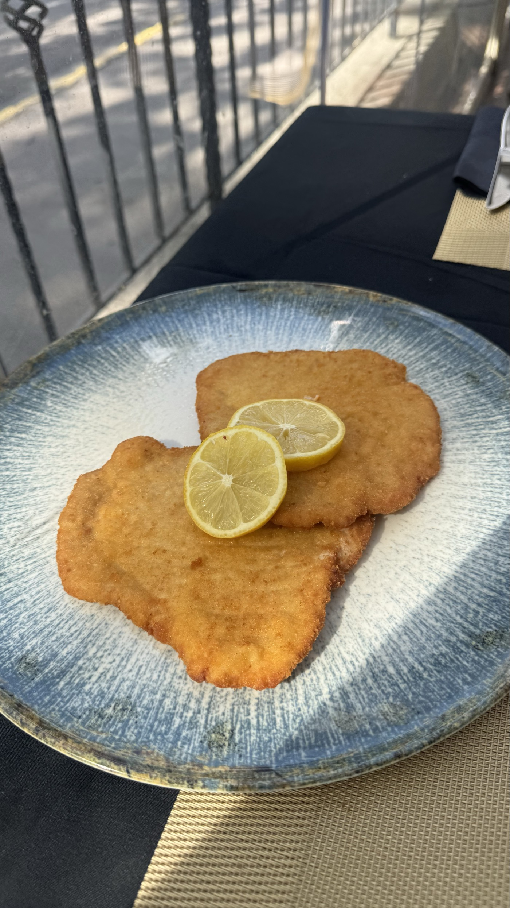
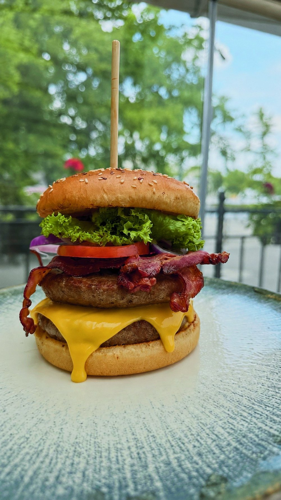
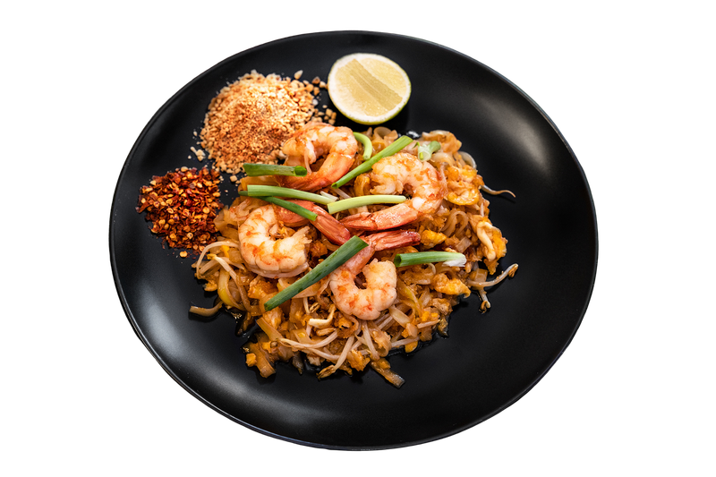
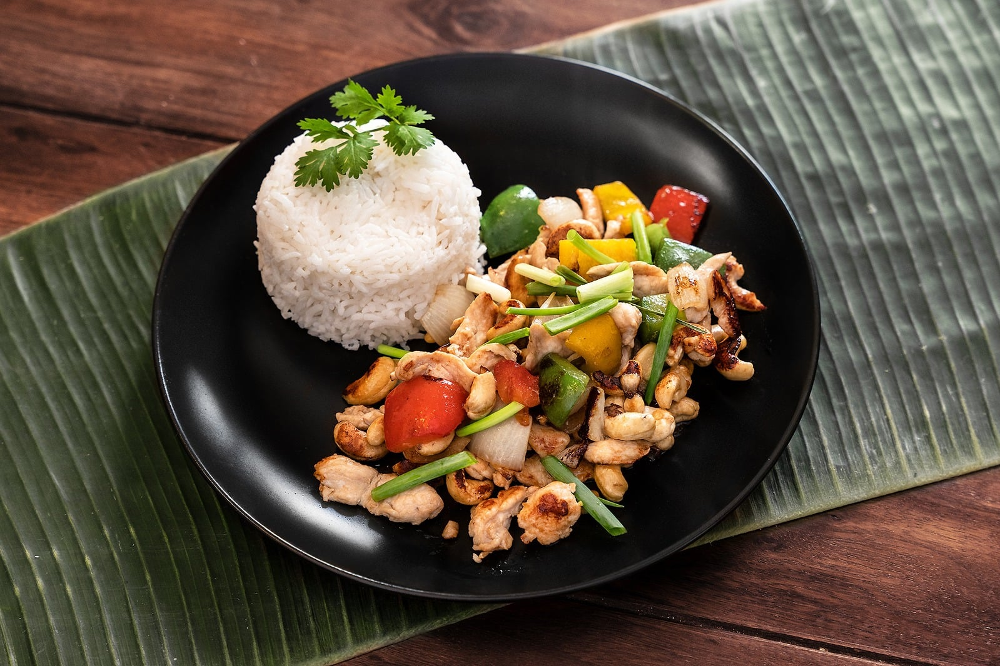
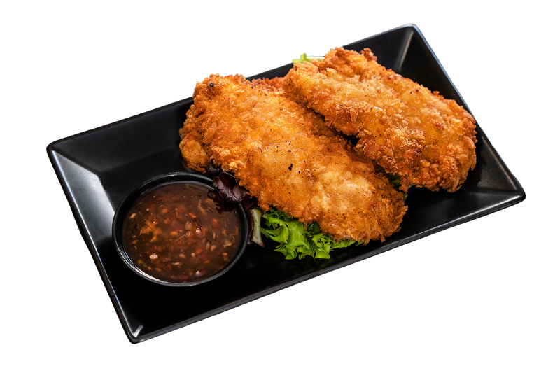

Tom Yum
Világhírű, tüzesen csípős thai leves citromfűvel, galangával és kaffir citromlevéllel.
3 290 Ft-tólThai–magyar fúziós étterem: Thai SELECT-minősített, autentikus thai konyha és igazi magyar klasszikusok egy asztalnál. Nálunk a felfedezők és a biztosra menők egyaránt jól laknak.

Pad Thai · Thaiföld nemzeti ételeEredeti thai receptek citromfűvel, galangával és kaffir citromlevéllel, thai szakácsok kezéből.
Pörkölt, gulyás, rántott hús és Angus burgerek – a jól ismert, szeretett ízek.
Tom Yum vagy pörkölt? Nálunk az egész társaság megtalálja a kedvencét.
Közvetlen kilátással a Hősök terére – pár lépésre az Andrássy úttól, a Városligettől és a Széchenyi fürdőtől.
Válassz egy előételt vagy levest, majd egy főételt.
Az árak tartalmazzák az áfát, de a 12%-os szervizdíjat nem. Allergénekről kérdezd szakácsainkat!
Büszkén viseljük a Thai SELECT Casual minősítést – a Thai Királyi Kormány Kereskedelmi Minisztériumának hivatalos elismerését. Csak azok az éttermek kapják meg, amelyek valóban autentikus thai ételeket kínálnak, eredeti alapanyagokból, valódi thai fűszerekkel és hagyományos technikákkal készítve.
A minősítést azért hozták létre, mert külföldön sok étterem hívja magát „thainak” anélkül, hogy valódi thai ételt főzne. Nálunk tehát nem mi állítjuk, hogy autentikusak vagyunk – a thai kormány igazolja.
Első konyhánkat 2023-ban nyitottuk meg, tisztán thai étteremként, Budán. Nagy bemutatkozásunk a Múzeumkertben rendezett Thai Fesztiválon volt, ahol gyorsan a Street Kitchen gasztroblog egyik kedvencévé váltunk.
2026 elején a város egyik legforgalmasabb pontjára, a Hősök tere mellé költöztünk.
Új otthonunkban láttuk, hogy vendégeink egy része a megszokott, hazai ízeket is keresi. Ezért a menünket gondosan kibővítettük magyar klasszikusokkal – anélkül, hogy elengedtük volna autentikus thai gyökereinket. Így senkinek sem kell választania: a thai konyha szerelmesei és a magyaros ízek hívei együtt ülhetnek asztalhoz. Ebből született meg a mi thai–magyar fúziós konyhánk.
Olvasd el a Street Kitchen cikket ↗A thai konyha a szívügyünk – de itt, a Hősök terénél, a magyar ízek legalább annyira fontosak. A gulyást, a pörköltet, a rántott húst és az Angus burgereket ugyanazzal a gonddal és minőséggel készítjük, mint a thai fogásainkat. Akár egy tüzes Tom Yumra, akár egy tányér pörköltre vágysz, nálunk az igazit kapod.




Világhírű, tüzesen csípős thai leves citromfűvel, galangával és kaffir citromlevéllel.
3 290 Ft-tól
Thaiföld nemzeti étele: rizstészta édes-savanyú tamarind szósszal, tojással és mogyoróval.
4 950 Ft-tól
Ropogós kesudióval, édes paprikával és gombával pirított wok fogás, selymes szósszal.
5 310 Ft-tól
Könnyű, levegős és extra ropogós tempurabundában, édes-pikáns chiliszósszal.
3 550 Ft-tól★★★★★„Már belépéskor érezhető volt a barátságos, hangulatos légkör, a személyzet pedig végig figyelmes és kedves volt velem. Az ételek nemcsak gyönyörűen voltak tálalva, hanem rendkívül finomak is voltak, minden falatban érezhető volt a minőség és a gondosság.”
Henrietta Imszticsei
★★★★★„Nagyon rendesek, én ettem eredeti Thai Pad see eew-t, és itthon eddig ez az étterem nagyon adja ezt az érzést, a tészta finom, kedves a felszolgáló, ha ilyen jó minőségű a többi ételük is akkor megéri betérni, és mindent kipróbálni.”
adam molnar
★★★★★„Ritka, amikor egy hely ennyire összeáll: elképesztően finom ételek (előételként a bundázott rák kötelező!), autentikus ízek, igényes tálalás és fantasztikus kilátás a Hősök terére. Egyszerűen olyan élmény, amit kár lenne kihagyni!”
Linda Lázár
★★★★★„I have no words to describe how satisfied I am with everything in this restaurant! Food looks and taste first class! Feels authentic and well prepared. Waiter was really good and professional, but also sweet and helpful, big shout out for him!”
Desimir Dimovic
A Hősök terénél, a Dózsa György út 88. szám alatt, Budapest 1068 – a Mirage Medic Hotel épületében. A Hősök tere (M1) metrómegálló pár lépésre van.
Minden nap 11:00 és 22:00 között várunk.
Igen. A helyben fogyasztás mellett elvitelre és házhozszállításra is rendelhetsz – a legegyszerűbben a Wolton keresztül.
Igen. Az autentikus thai fogások mellett magyar klasszikusokat is kínálunk – gulyást, pörköltet, rántott húst, burgereket –, és sok nem csípős thai ételt is.
Igen. Autentikus thai konyhánkat a Thai Királyi Kormány Kereskedelmi Minisztériuma Thai SELECT Casual minősítéssel ismerte el.
Céges vacsora, születésnap, privát parti vagy ünnepség – tartsd nálunk, a Hősök terénél, thai–magyar fúziós konyhánkkal. Írd meg, mire gondolsz, és személyre szabott ajánlatot állítunk össze.
Egy 19. századi, kupolás villában, közvetlen kilátással a Hősök terére – a Mirage Medic Hotel épületében. Néhány perc séta az Andrássy út, a Városliget és a Széchenyi fürdő.
Helyben fogyasztás · Elvitel · Házhozszállítás